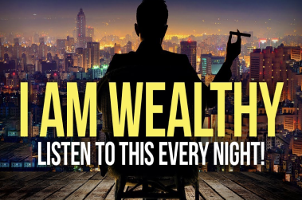
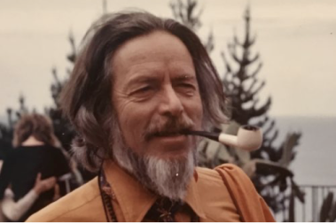

Quotes
-

Top 25 Alan Watts Quotes that Will Give You Goosebumps!
September 30th, 2022
Alan Watts was a British philosopher, speaker, and author. He passed away in 1973, but his legacy lives on through his many inspirational speeches, some of which have millions of views on YouTube. Here are 25 of the best Alan Watts quotes that...
Continue reading. -

Top 25 Alan Watts Quotes that Will Give You Goosebumps!
September 30th, 2022
Are you usually your own cheerleader, or are you your own worst enemy? Think about this! Life is not always going to go the way you want it to. You can either torture yourself or cheer yourself on. You should live your life by making...
Continue reading. -
Top 25 Alan Watts Quotes that Will Give You Goosebumps!
September 30th, 2022
Alan Watts was a British philosopher, speaker, and author. He passed away in 1973, but his legacy lives on through his many inspirational speeches, some of which have millions of views on YouTube. Here are 25 of the best Alan Watts quotes that...
Continue reading.